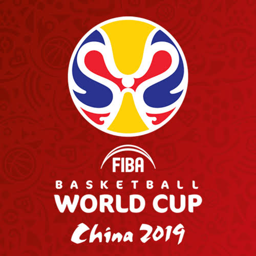
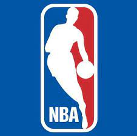
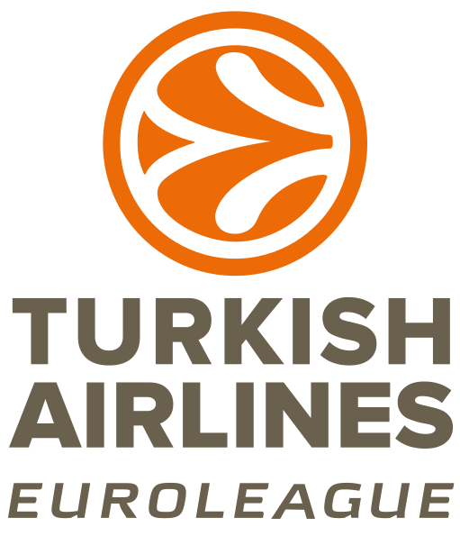

Competities

Basketball World Cup
De Wereldkampioenschappen basketbal (officieel FIBA World Championship) is een wereld basketbaltoernooi dat eens per vier jaar gehouden wordt. Het toernooi werd voor het eerst, alleen voor mannen, gehouden in Argentinië. In 1953 werd ook een toernooi voor vrouwen georganiseerd. Oorspronkelijk deden 16 teams mee, sinds 2014 zijn dit er 28. Om het toernooi uit de pas te laten lopen met het WK voetbal, werd het eerstvolgende WK in 2019 gehouden.

Amerikaanse NBA
De in 1946 in de Verenigde Staten opgerichte National Basketball Association of kortweg NBA is de organisator van de meest prestigieuze basketbalcompetitie ter wereld en een van de vier grote sportliga's in Noord-Amerika. In de NBA speelt ook één team uit Canada, de Toronto Raptors.

Euroleague
De Turkish Airlines EuroLeague (officieel ULEB Turkish Airlines EuroLeague) is de hoogste professionele basketbalcompetitie in Europa voor herenteams. De huidige kampioen is Anadolu Efes uit Turkije.
In tegenstelling tot de EuroLeague Women wordt de competitie georganiseerd door ULEB in plaats van FIBA Europe. Sinds 1988 spelen de beste vier ploegen van het seizoen in één weekend de eindronde. Ze spelen in een van tevoren aangewezen speelstad. De EuroLeague titel is gewonnen door 21 verschillende clubs, 13 clubs hebben die titel vaker gewonnen. De meest succesvolle club is Real Madrid, met tien titels. De huidige kampioen is Anadolu Efes, die won van FC Barcelona in de finale van 2021, waarmee de club zo zijn eerste titel behaalde.